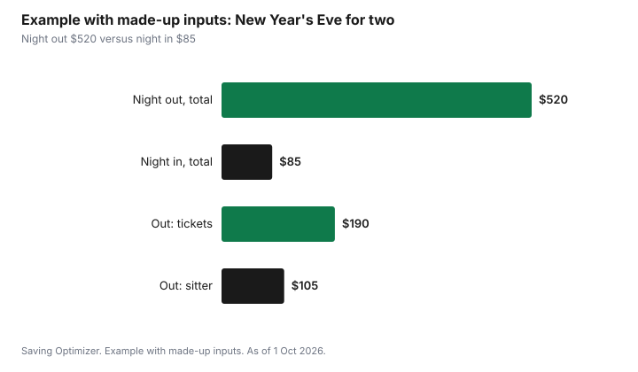

Events · Canada
New Year's Eve in Canada: Going Out vs Staying In
Whether New Year's Eve in Canada costs less out or in depends on the lines people forget: the ride home at peak demand, a babysitter at holiday rates, and the cost of the next day. New Year's Eve 2026 falls on a Thursday, and New Year's Day, Friday 1 January 2027, is a statutory holiday, so many people get a long weekend. Ticketed parties and set-menu dinners are priced for the night. Free city celebrations, such as the waterfront events many cities run, cost little beyond transit, and a night in with friends can cost a fraction of a night out. Price the whole night, then decide.
Key takeaways
- New Year's Eve 2026 is Thursday 31 December; New Year's Day, Friday 1 January 2027, is a statutory holiday.
- Going out has more lines than the ticket: dinner, drinks, the ride home at peak demand, a sitter and sometimes a hotel.
- Many cities hold free outdoor celebrations. Toronto and Niagara Falls did on 31 December 2025; the free Ottawa Christmas Market is open on 31 December 2026.
- Staying in works best as a potluck with a start time, a drinks plan and a countdown.
- Plan a safe ride before the night starts; it is part of the budget, not an extra.
- Example with made-up inputs: a couple's night out costs $520; a night in with friends costs $85.
What going out really costs
A New Year's Eve ticket or set menu is the visible cost. The others show up during the night or the next morning. Write each line down before buying anything.
| Line | What it covers | Notes |
|---|---|---|
| Tickets or cover | Party, club, gala or concert | Often priced higher than a normal night |
| Dinner | Set menu or regular dinner before | Holiday set menus are common |
| Drinks | At the event or before | A big line at bars and parties |
| Ride home | Taxi or ride-hailing near midnight | Demand pricing is common after midnight |
| Babysitter | Evening and late-night care | Holiday rates are often higher |
| Outfit | New or rented | Rewearing is free |
| Hotel | If staying near the event | Can be the largest line |
| Next day | Brunch, recovery, lost plans | Often forgotten |
Read ticket terms before buying. Some New Year's Eve tickets are non-refundable, and some packages bundle drinks or food that you may not want. The guide to ticket fees explains how to compare the total, including fees.
Questions to ask before you buy a ticket
- What exactly is included: entry only, food, a set number of drinks, a midnight toast?
- Is the ticket refundable or transferable if you get sick or the weather turns?
- What time does the event end, and how will you get home from there at that hour?
- Is there a coat check fee, a minimum spend or a service charge added to a set menu?
- Would the same group of friends have as good a night at someone's home?
If the answers add more lines than the ticket itself, the night out may still be worth it, but you will know its real price before you commit.
Free city celebrations
Many Canadian cities hold free outdoor New Year's Eve events with music and fireworks. On 31 December 2025, Toronto held a free waterfront celebration with music, performances and a 10-minute midnight fireworks show, according to the City of Toronto. Niagara Falls held free outdoor viewing at Queen Victoria Park with an early family show and a midnight display. In Ottawa, the free Ottawa Christmas Market at Lansdowne is open on 31 December 2026.
Plans for 31 December 2026 are usually announced in late fall. Check your city's events page in December. Many cities also offer early family celebrations, which suit children and parents who would rather not stay up until midnight.
Some transit systems extend service or offer free rides on New Year's Eve, often with a sponsor. Check your local transit agency's December announcements; it can turn a free event into a nearly free night.
The night in, done well
A night in is cheaper, but it can feel like a non-event without a plan. Treat it as a small party: a guest list, a start time, a potluck, a drinks plan and a countdown.
- Choose a start time and an end time. An 'until midnight' party is shorter and cheaper than an open-ended one.
- Make it a potluck with a sign-up list: appetizers, a main, dessert, drinks.
- Plan one signature drink and a non-alcoholic option.
- Pick an activity: board games, a movie, a puzzle, or the countdown broadcast.
- For hockey fans, the NHL Winter Classic is on 31 December on Sportsnet; the guide to watching the NHL covers access.
- Offer couches or a ride plan for guests who should not drive.
The party hosting guide has a sign-up sheet and Health Canada's two-hour rule for food left out.
With children
Families often celebrate early. Many cities and venues run afternoon or early-evening family events, and a 'midnight' countdown at 8 p.m. or 9 p.m. using a countdown video for another time zone works for young children. A night in avoids sitter costs entirely, which for many families is the biggest single saving.
Getting home safely
Plan the ride home before the night starts. Options include a designated driver, transit, a pre-booked taxi, staying over with friends, or a hotel within walking distance. Ride-hailing prices can rise sharply around midnight, so price it in advance or choose another way home. Driving impaired is a criminal offence in Canada and carries provincial penalties too; no saving is worth that risk.
Example with made-up inputs: a couple's night
These numbers are an example with made-up inputs. They are not real prices. A couple with a young child prices a night out: two party tickets at a made-up $95 each, $190; dinner before, $120; drinks, $70; a sitter from 6 p.m. to 1 a.m., $105; a ride home after midnight, $35. Total $520.
They price a night in with two other couples instead: their share of a potluck, $40; drinks, $30; a countdown game and snacks, $15; no sitter, because their child sleeps at home. Total $85.
| Line | Night out | Night in |
|---|---|---|
| Tickets | $190 | $0 |
| Dinner or potluck | $120 | $40 |
| Drinks | $70 | $30 |
| Sitter | $105 | $0 |
| Ride home | $35 | $0 |
| Games and snacks | $0 | $15 |
| Total | $520 | $85 |

Common mistakes
- Comparing ticket prices without the ride home and the sitter.
- Buying non-refundable tickets early without reading the terms.
- Leaving the ride home until 12:30 a.m.
- Hosting an open-ended night in that runs up the drinks bill.
- Forgetting the next day's costs.
New Year's Eve sits at the end of the December spending plan. Put it there, with a cap, so it does not land on January's statement unplanned.
Sources
- City of Toronto, City of Toronto rings in 2026 with music, dancing and fireworks along the waterfront, news release, December 2025.
- Travel Niagara, Niagara Falls New Year's Eve, as of 1 Oct 2026. Free outdoor viewing at Queen Victoria Park on 31 Dec 2025.
- Ottawa Christmas Market, marchenoelottawa.com, as of 1 Oct 2026. Open 31 Dec 2026; free entry.
- Sportsnet, 9 Sep 2026. Winter Classic on 31 Dec on Sportsnet.
- Calendar: 31 December 2026 is a Thursday; 1 January 2027 is a Friday.
- The couple's budget and every amount in the example table and chart are an example with made-up inputs.
Frequently asked questions
What day is New Year's Eve 2026?
New Year's Eve 2026 is Thursday 31 December. New Year's Day, Friday 1 January 2027, is a statutory holiday, so many people have a long weekend.
Are there free New Year's Eve events in Canada?
Yes. Many cities hold free outdoor celebrations. On 31 December 2025 Toronto held a free waterfront celebration with fireworks and Niagara Falls offered free outdoor viewing. The free Ottawa Christmas Market at Lansdowne is open on 31 December 2026. Check your city's events page in December.
Is it cheaper to go out or stay in on New Year's Eve?
Usually staying in, once you add the ride home, a sitter, drinks and the next day to the ticket price. A potluck night in with friends, a start and end time and a drinks plan keeps costs low.
How do I get home safely on New Year's Eve?
Plan it before the night: a designated driver, transit, a pre-booked taxi, staying over with friends or a hotel within walking distance. Ride-hailing prices can rise sharply around midnight.
Researched and drafted with AI assistance and fact-checked against official Canadian sources. How we create content.
Disclosure: Saving Optimizer may earn a commission if a partner link is added later, such as a ticketing or ride offer type. No partnership is claimed on this page, and no venue or service is ranked. Education only.